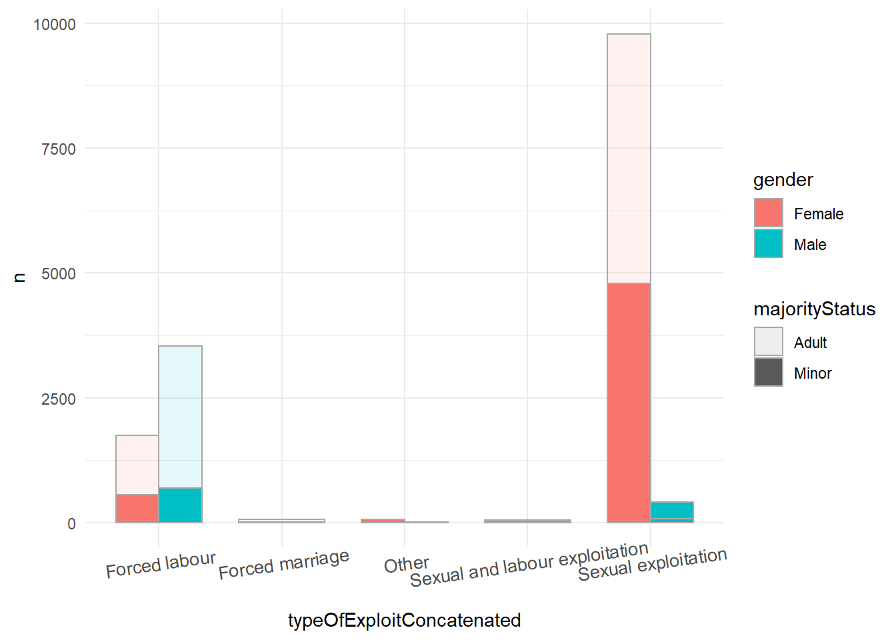
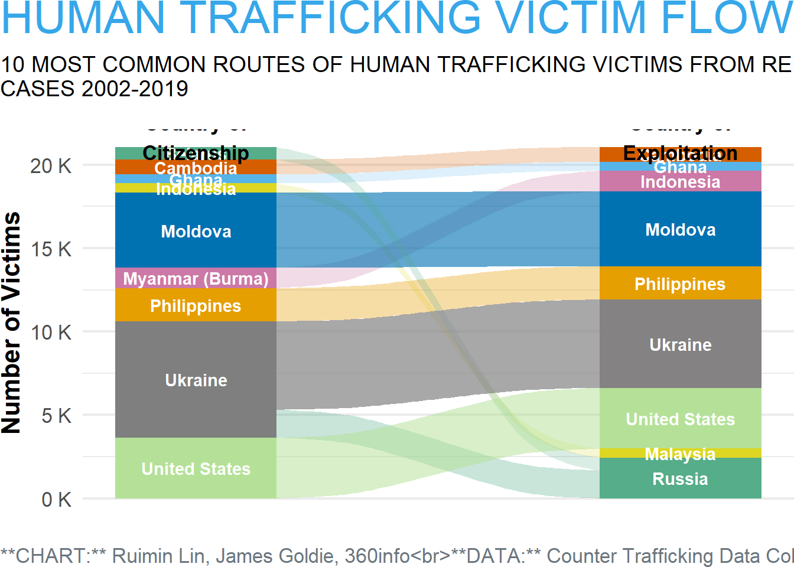

Code
ct <- read_csv("data/The Global Dataset 14 Apr 2020.csv")
ct <- ct %>%
select(-1) %>% # deselect unused column
na_if(-99) # replace all -99 values with NA as defined in the codebookReminder: Most of the code shown below is to demonstrate the derivation of final output. If interested in the code for final output only, please check section Section 0.4 and Section 0.5.
ct <- read_csv("data/The Global Dataset 14 Apr 2020.csv")
ct <- ct %>%
select(-1) %>% # deselect unused column
na_if(-99) # replace all -99 values with NA as defined in the codebookct$typeOfExploitConcatenated[ct$typeOfExploitConcatenated ==
"Forced labour;Sexual exploitation;Combined sexual and labour exploitation"] <- "Sexual and labour exploitation"ctp1 <- ct %>%
drop_na(typeOfExploitConcatenated) %>%
ggplot(aes(x = typeOfExploitConcatenated, fill = gender)) +
geom_bar(position = "dodge", width = .7) +
theme_bw() +
coord_flip()
ctp1ctp1a <- ct %>%
drop_na(majorityStatus, typeOfExploitConcatenated) %>%
ggplot(aes(x = typeOfExploitConcatenated, fill = gender)) +
geom_bar(position = "dodge", width = .7) +
theme_bw() +
coord_flip() +
facet_wrap(~majorityStatus)
ggplotly(ctp1a)ctEx <- ct %>% # dataset for type of exploits
select(gender, typeOfExploitConcatenated, majorityStatus) %>%
drop_na(typeOfExploitConcatenated) %>%
count(gender, typeOfExploitConcatenated) %>%
group_by(typeOfExploitConcatenated) %>%
mutate(pct = round((n/sum(n)),4)) %>%
arrange(desc(n)) %>%
head(10)
ctEx# A tibble: 10 × 4
# Groups: typeOfExploitConcatenated [6]
gender typeOfExploitConcatenated n pct
<chr> <chr> <int> <dbl>
1 Female Sexual exploitation 15259 0.954
2 Female Other 4832 0.684
3 Male Forced labour 4712 0.525
4 Female Forced labour 4257 0.475
5 Male Other 2231 0.316
6 Male Sexual exploitation 730 0.0457
7 Female Slavery and similar practices 295 0.822
8 Female Forced marriage 168 1
9 Female Sexual and labour exploitation 78 1
10 Male Slavery and similar practices 64 0.178 ctp1b <- ctEx %>%
mutate(Label = paste0(n, "(",round(pct*100,2), "%", ")")) %>%
ggplot(aes(x = typeOfExploitConcatenated, y = n,
fill = gender)) +
geom_col(position = "dodge") +
geom_text(aes(label = Label),
position = position_dodge(width = 0.9),
size = 3) +
theme_bw()
ctp1b +
theme(axis.text.x = element_text(size = 10, angle = 8))ctEx1 <- ct %>% # dataset for type of exploits
select(gender, typeOfExploitConcatenated, majorityStatus) %>%
drop_na(typeOfExploitConcatenated, majorityStatus) %>%
count(gender, typeOfExploitConcatenated, majorityStatus) %>%
group_by(typeOfExploitConcatenated) %>%
mutate(pct = round((n/sum(n)),4)) %>%
arrange(desc(n)) %>%
head(16)
ctEx1# A tibble: 16 × 5
# Groups: typeOfExploitConcatenated [5]
gender typeOfExploitConcatenated majorityStatus n pct
<chr> <chr> <chr> <int> <dbl>
1 Female Sexual exploitation Adult 9787 0.650
2 Female Sexual exploitation Minor 4797 0.318
3 Male Forced labour Adult 3531 0.540
4 Female Forced labour Adult 1751 0.268
5 Male Forced labour Minor 696 0.106
6 Female Forced labour Minor 555 0.085
7 Male Sexual exploitation Minor 406 0.027
8 Male Sexual exploitation Adult 72 0.0048
9 Female Forced marriage Adult 68 0.861
10 Female Other Minor 68 0.436
11 Female Other Adult 58 0.372
12 Female Sexual and labour exploitation Adult 46 0.590
13 Female Sexual and labour exploitation Minor 32 0.410
14 Male Other Adult 17 0.109
15 Male Other Minor 13 0.0833
16 Female Forced marriage Minor 11 0.139 ctp1c <- ctEx1 %>%
ggplot(aes(x = typeOfExploitConcatenated, y = n,
group = gender,fill = gender, alpha = majorityStatus)) +
geom_col(position = "dodge", colour = "darkgrey", width = 0.7) +
theme_minimal() +
theme(axis.text.x = element_text(size = 10, angle = 8))
ctp1c
colourp = c(Male = "#f6ce55", Female = "#990000")
# create a new column for gender and majoritystatus together
testp <- ctEx1 %>%
ggplot(aes(x = typeOfExploitConcatenated,
y = round(pct,2))) +
geom_col(aes(fill = gender, group = typeOfExploitConcatenated,
alpha = majorityStatus),position = "dodge", colour = "darkgrey", width = 0.7) +
scale_fill_manual(values = colourp) +
theme_minimal() +
coord_flip() +
ylab("Percentage") +
xlab("Type of Exploits") +
ggtitle("Percentage of Victim's Gender Group")
ggplotly(testp)ctEx1 <- ctEx1 %>%
mutate(genderGroup =
paste(gender, tolower(majorityStatus),
sep = ' '))
ctEx1 <- ctEx1 %>%
group_by(genderGroup) %>%
mutate(typeOfExploitConcatenated = fct_reorder(typeOfExploitConcatenated,
pct)) %>%
ungroup()
ctEx1 <- ctEx1 %>%
mutate(genderGroup = fct_reorder(genderGroup, -pct))
excount <- ct %>% # dataset for type of exploits
select(gender, typeOfExploitConcatenated, majorityStatus) %>%
drop_na(typeOfExploitConcatenated) %>%
group_by(typeOfExploitConcatenated) %>%
count(typeOfExploitConcatenated) %>%
arrange(desc(n)) %>%
head(6)
colourGP = c("Male adult" = "#ffc249",
"Male minor" = "#ffeac1",
"Female adult" = "#ff3212",
"Female minor" = "#ff7b7b")
testp1 <- ctEx1 %>%
ggplot(aes(x = typeOfExploitConcatenated,
y = round(pct,2),
label = scales::percent(pct))) +
geom_col(aes(fill = genderGroup,
group = genderGroup),
position = position_fill(reverse = TRUE),
colour = "white",
width = 0.7) +
theme_360() +
scale_fill_manual(values = colourGP) +
scale_y_continuous(labels = scales::percent) +
scale_x_discrete(labels = c("Sexual and labour exploitation" =
paste0(
"Sexual and\nlabour exploitation\n",
"(n = ",
excount$n[which(excount$typeOfExploitConcatenated==
"Sexual and labour exploitation")], ")"),
"Sexual exploitation" =
paste0(
"Sexual exploitation\n",
"(n = ",
excount$n[which(excount$typeOfExploitConcatenated==
"Sexual exploitation")],
")"),
"Forced labour" =
paste0("Forced labour\n",
"(n = ",
excount$n[which(excount$typeOfExploitConcatenated==
"Forced labour")],
")"),
"Other" =
paste0("Other\n",
"(n = ",
excount$n[which(excount$typeOfExploitConcatenated==
"Other")],
")"),
"Forced marriage" =
paste0("Forced marriage\n",
"(n = ",
excount$n[which(excount$typeOfExploitConcatenated==
"Forced marriage")],
")"))) +
coord_flip() +
ylab("Percentage") +
xlab("Type of Exploits") +
labs(title = toupper("Distribution of Victims"),
subtitle = toupper("From reported human trafficking cases 2002-2019 "),
caption = paste(
"**CHART:** Ruimin Lin, James Goldie, 360info",
"**DATA:** Counter Trafficking Data Collaborative",
sep = "<br>")) +
theme(legend.position = "top",
legend.direction = "horizontal",
legend.title = element_blank(),
panel.grid.major.y = element_blank()) +
guides(fill=guide_legend(nrow=2,byrow=TRUE))
testp1save_360plot(testp1, "out/figures/victimdistributions.png",
shape = "sdtv-landscape")ct2 <- ct %>%
select(yearOfRegistration,
gender,
ageBroad, citizenship,
CountryOfExploitation)%>%
mutate(yearOfRegistration = as.character(yearOfRegistration))
ct2a <- ct2 %>%
mutate(citizenship = countrycode(citizenship, origin = 'iso2c',
destination = 'country.name'),
CountryOfExploitation = countrycode(CountryOfExploitation, origin = 'iso2c',
destination = 'country.name')) %>%
drop_na(citizenship, CountryOfExploitation)
ct2a# A tibble: 28,796 × 5
yearOfRegistration gender ageBroad citizenship CountryOfExploitation
<chr> <chr> <chr> <chr> <chr>
1 2002 Female 18--20 Moldova Serbia
2 2002 Female 18--20 Moldova Serbia
3 2002 Female 18--20 Moldova Serbia
4 2002 Female 18--20 Moldova Serbia
5 2002 Female 18--20 Moldova Serbia
6 2002 Female 18--20 Moldova Serbia
7 2002 Female 18--20 Moldova Serbia
8 2002 Female 18--20 Moldova Serbia
9 2002 Female 18--20 Moldova Serbia
10 2002 Female 18--20 Moldova Serbia
# … with 28,786 more rowsct2b <- ct2a %>%
group_by(citizenship, CountryOfExploitation)%>%
summarize(counts = n()) %>%
ungroup() %>%
arrange(desc(counts)) %>%
head(10)
ct2b1 <- ct2b %>%
rename(CountryOfOrigin = citizenship)
parset(ct2b1, dimensions = c('CountryOfOrigin', 'CountryOfExploitation'),
value = htmlwidgets::JS("function(d){return d.counts}"),
tension = 0.5)t1 <- grobTree(textGrob("Country of\nCitizenship",
gp=gpar(fontsize=13, fontface="bold",
fontfamily = "body360info")))
t2 <- grobTree(textGrob("Country of\nExploitation",
gp=gpar(fontsize=13, fontface="bold",
fontfamily = "body360info")))
# part of colour codes refer to https://thenode.biologists.com/data-visualization-with-flying-colors/research/
Okabe_Ito <- c("#D55E00", "#56B4E9", "#CC79A7", "#DDD723",
"#0072B2", "#E69F00", "#55AD89", "#848282",
"#B4E197")
# country of citizenship
# country of exploitation
fd <- ct2b1 %>%
ggplot(aes(y = counts,
axis1 = CountryOfOrigin,
axis2 = CountryOfExploitation)) +
geom_alluvium(aes(fill = CountryOfExploitation,
alpha = counts)) +
geom_stratum(
aes(fill = CountryOfExploitation),
colour = NA) +
scale_fill_manual(values = Okabe_Ito) +
geom_text(stat = "stratum",
aes(label = after_stat(stratum),
fontface = 2),
colour = "#FFFFFF",
family = "body360info") +
guides(fill="none",
alpha = "none") +
scale_x_continuous(breaks = NULL) +
scale_y_continuous(labels = label_number(suffix = " K", scale = 1e-3)) +
scale_alpha_continuous(range = c(0.2, 0.7)) +
annotation_custom(t1,xmin=1,xmax=1,ymin=21200,ymax=Inf) +
annotation_custom(t2,xmin=2,xmax=2,ymin=21200,ymax=Inf) +
ylab("Number of Victims") +
labs(title = toupper("Human Trafficking Victim Flows"),
subtitle = toupper(paste(
"10 Most common routes of human trafficking victims from reported",
"cases 2002-2019",
sep = "\n")),
caption = paste(
"**CHART:** Ruimin Lin, James Goldie, 360info",
"**DATA:** Counter Trafficking Data Collaborative",
sep = "<br>")) +
theme_360() +
theme(axis.text.x = element_blank(),
axis.ticks.x = element_blank(),
panel.background = element_blank())
fd
save_360plot(fd, "out/figures/victimflows.png",
shape = "photo-portrait")#ct2b2 <- ct2b1 %>%
# mutate(is_domestic =
# ct2b1$CountryOfOrigin ==
# ct2b1$CountryOfExploitation)
#ct2b2 <- ct2b2 %>%
# mutate(is_domestic = as.character(is_domestic))#ctcountries stands for citizenship countries
# ctcountries <- read_csv("data/countries_codes_and_coordinates.csv") %>%
# mutate(citizenship = `Alpha-2 code`) %>%
# distinct(`Alpha-2 code`, .keep_all = TRUE)
#excountries stands for countries the victim are exploitted to
#excountries <- read_csv("data/countries_codes_and_coordinates.csv") %>%
# mutate(CountryOfExploitation = `Alpha-2 code`) %>%
# distinct(`Alpha-2 code`, .keep_all = TRUE)# match the citizenship country code with country names and coordinates
#ct1 <- ct %>%
# select(yearOfRegistration,
# gender,
# citizenship,
# typeOfExploitConcatenated,
# CountryOfExploitation) %>%
# drop_na(CountryOfExploitation)
#ct1
#ct1a <- left_join(ct1, ctcountries)
#ct1a <- ct1a %>%
# mutate(CountryFrom = Country,
# LatitudeFrom = `Latitude (average)`,
# LongitudeFrom = `Longitude (average)`)
#ct1a <- ct1a %>%
# select(citizenship,
# CountryFrom,
# LatitudeFrom,
# LongitudeFrom,
# yearOfRegistration,
# gender,
# typeOfExploitConcatenated,
# CountryOfExploitation)# match the country of exploitation code with country names and coordinates
#ct1b <- left_join(ct1a, excountries)
#ct1b <- ct1b %>%
# mutate(CountryOfExploitted = Country,
# LatitudeOfExploitation = `Latitude (average)`,
# LongitudeOfExploitation = `Longitude (average)`)
#ct1b <- ct1b %>%
# select(citizenship,
# CountryFrom,
# LatitudeFrom,
# LongitudeFrom,
# yearOfRegistration,
# gender,
# typeOfExploitConcatenated,
# CountryOfExploitation,
# CountryOfExploitted,
# LatitudeOfExploitation,
# LongitudeOfExploitation
# )